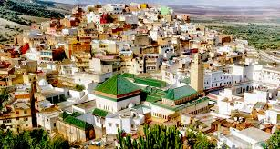

Moroccco Cities
Casablanca
Casablanca is a port city and a commercial center located in the west of Morocco, facing the Atlantic Ocean. The French colonial
heritage of the city is reflected in the Moorish architecture of the city center, combining Moorish style and European Art Deco.

Tangier
A Moroccan port located in the Strait of Gibraltar, Tangier has been a strategic point between Africa and Europe since the time of the Phoenicians.
Agadir
Agadir, a city located on the south Atlantic coast of Morocco in the foothills of the Anti-Atlas, is the capital of the province of Agadir Ida-Outanane.
This seaside resort is famous for its golf courses,
its wide crescent beach and its seafront promenade lined with cafes, restaurants ....
Rabat
Rabat, the capital of Morocco, is built on the banks of the Bouregreg River and the Atlantic Ocean.Ce fort royal de l'époque berbère est entouré par
des jardins formels de style français et surplombe l'océan.

Oujda
Oujda is a city in the northeast of Morocco, near the Algerian border. It is famous for its Great Mosque, built at the end of the 13th century,
located with finely carved wood and mosaic tiles. The mosque is located in the old town, the medina, behind the ramparts and the imposing gate of Sidi Abdelouahab.
Marrakesh
Marrakech, the former imperial city of western Morocco, and a major economic center housing mosques, palaces and gardens.
The medina is a fortified and densely populated medieval city dating from the Berber Empire, with alleys intertwined like a labyrinth, where the bustling souks (markets) sell fabrics, pottery and traditional jewelry.
Ifran
ifrane is a city located in the mountains of the Middle Atlas in Morocco. It is renowned for its Alpine-style architecture and its ski slopes and nearby forests. The stone lion statue near the green La Prairie park is a symbol. At the exit of the city is the source of Ain Vittel and its multiple waterfalls. To the west,
Ifrane National Park and its Atlas cedar forests are home to rare Barbary macaques.
Nador
Nador is a city located in the northeast of Morocco, located in the region of the eastern Rif, adjacent to the lagoon of Nador.

Meknes
Meknes is a city located in the north of Morocco. It is renowned for its imperial past, with vestiges such as Bab Mansour, a huge door with arches and mosaic tiling. The door leads inside the ancient imperial city.
Al hoceima
Al Hoceïma is a city located on the north coast of Morocco, 320 km from Tangier to the west and 250 km from Saïdia and the Algerian border to the east. Al Hoceïma is located in the center of the region of
Rif, séparant le Rif occidental du Rif oriental

Tetouan
Tétouan is a city in Morocco, located in the north of the country, in the western Rif, also called Jbala country. The city is located about 60 km southeast of the city of Tangier
Safi
Safi is a port city located on the Atlantic coast of Morocco. Ksar El Bahr, a 16th-century fortress built by Portuguese settlers, is on the seafront. In the old town, food and craft stalls line Rue du Souq. Nearby, the National Museum of Ceramics is housed in another fort built by the Portuguese. The centerpieces of the collection are the decorated pottery of the region, created in the workshops of the Hill of Potters, a hillside district.
Essaouira
Essaouira is a port and tourist city located on the Atlantic coast of Morocco. By the sea, its medina (old town) is protected by 18th century ramparts, called the Skala de la Kasbah and designed by European engineers. Dotted with old copper cannons, the fortifications offer a view of the ocean. With their strong trade winds, the city's beaches are ideal for surfing, windsurfing and kitesurfing.
Taza
Taza is a city located in the northeast of Morocco in the Taza corridor, a mountain pass where the Rif and Middle Atlas mountains meet, chief town of the province of Taza. It is 220 km from Oujda and 316 km from Rabat.
Taroudant
Taroudannt, commonly written Taroudant, is a city in southwestern Morocco located in the plain of Souss, capital of the province of the same name. In 2014, it had 80,149 inhabitants

Beni Mellal
Béni Mellal is a city in central Morocco. With a population of around 200,000, it is the main city and the capital of the Beni Mellal-Khenifra region.
Chefchouan
Chefchaouen, or Chaouen, is a city located in the Rif Mountains, in northwest Morocco. It is famous for the remarkable buildings in different shades of faded blue of its old town. Leatherwork and weaving workshops line its steep cobbled paths. On the central shaded square of Outaouais Hammam is the casbah with red walls, fortress and dungeon of the 15th century with ethnographic and artistic exhibitions. The octagonal minaret of the Great Mosque stands nearby.
Kenitra
Kenitra is a city and urban commune of Morocco. During the French protectorate, the city bore the name of Port-Lyautey. Covering an area of 76 km², Kenitra is one of the largest Moroccan cities connecting the northern cities to the country's capital

Tafoughalt
Tafoughalt or Taforalt, in Morocco, is a small village in the region of the eastern Rif, in the Beni Snassen range. It brings together several shops where people living in the mountains generally come to stock up.
Asilah
Assilah is a city located on the Atlantic coast of Morocco, south of Tangier. Its old town, or medina, is surrounded by ramparts and well-preserved doors, built in the 15th century by Portuguese settlers. The medina is an artistic center renowned for its murals and for Moussem, an annual international cultural festival.

sahara
Le Sahara occidental est un territoire de 266 000 km² du Nord-Ouest de l'Afrique, bordé par la province marocaine de Tarfaya au nord, l'Algérie au nord-est, la Mauritanie à l'est et au sud, tandis que sa côte ouest donne sur l'Atlantique
dakhla
Dakhla is a city located in Western Sahara - disputed and non-autonomous territory according to the UN - and under de facto administration from Morocco since its evacuation by Mauritania in 1979
Merzouga
Merzouga is a small Moroccan town located in the Sahara Desert, near the Algerian border. Merzouga opens onto erg Chebbi, a huge expanse of sand dunes north of the city. To the west is Dayet Srji, a seasonal salt lake, often dry in summer. When it fills up again, it attracts a wide variety of migratory and desert birds, including warblers, nightjars and, sometimes, flamingos.
Laayoun
Laayoune is the most important city in Western Sahara. It is located by the Atlantic, 500 km south of Agadir and 400 km west of Tindouf, on the road to Dakhla.
Berkan
Berkane est une ville de la province de Berkane, dans la région de l'Oriental au nord-est du Maroc, près de la frontière avec l'Algérie.

Saidia
Saïdia, surnommée « la perle bleue » est une ville de la province de Berkane, dans la région de l'oriental au Maroc. Saïdia est située sur la plaine de Triffa au nord des monts Ait Iznassen, et a l’ouest des monts Ikebdan Saïdia constitue un lieu de villégiature idéal pour des milliers de citoyens de l'Oriental.